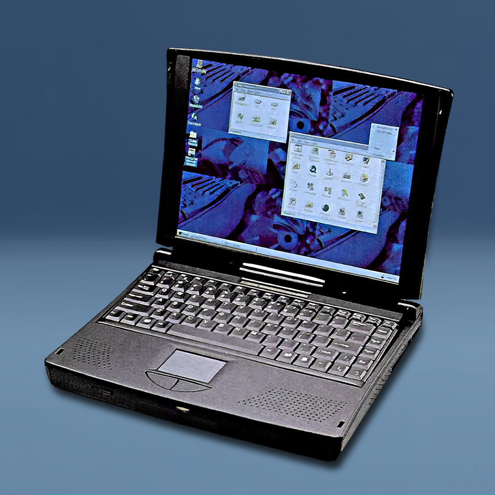
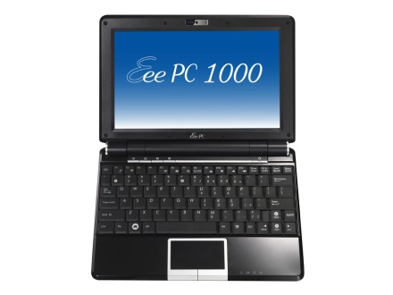
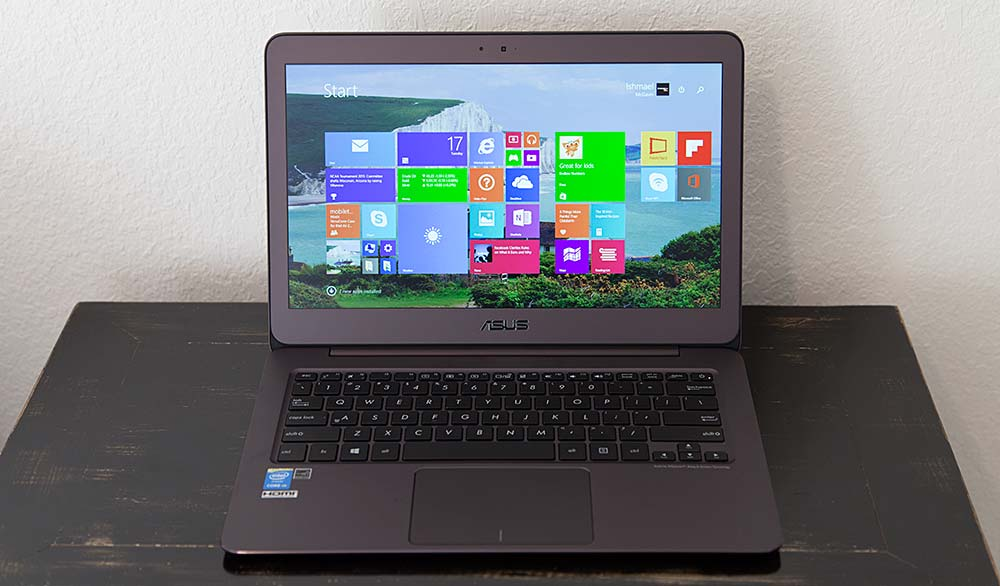
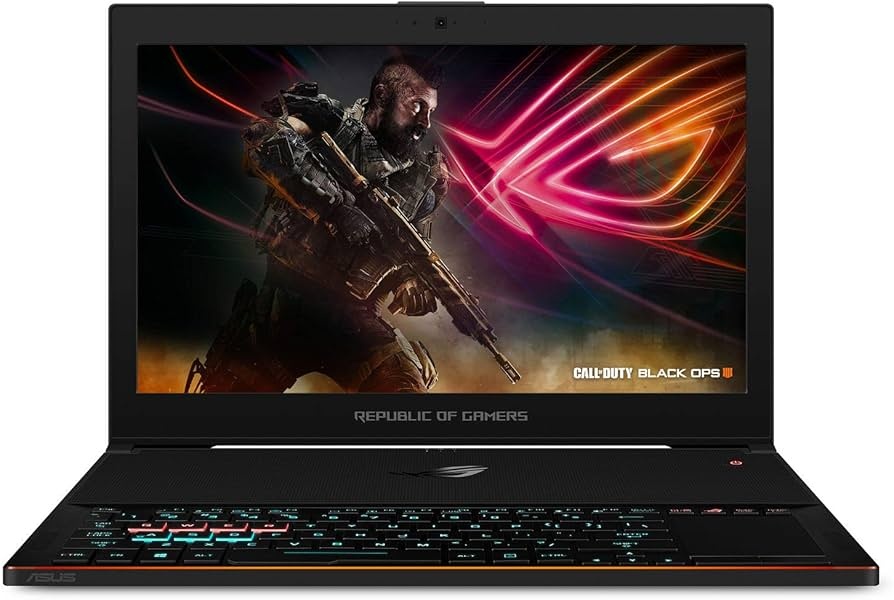
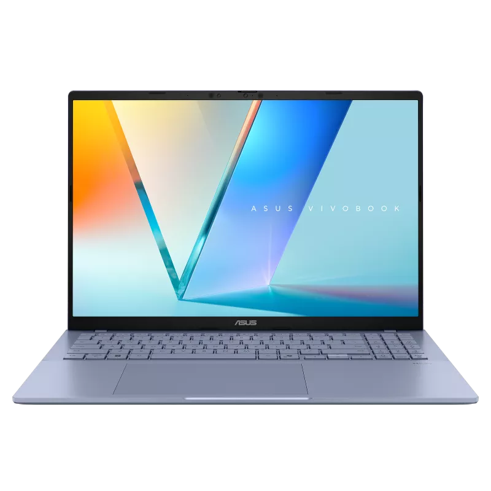
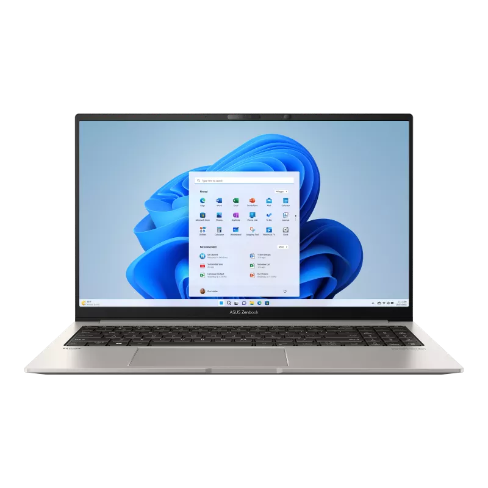
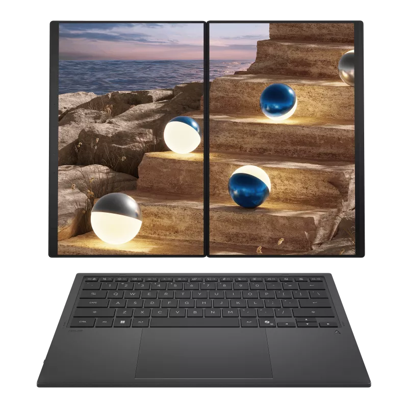
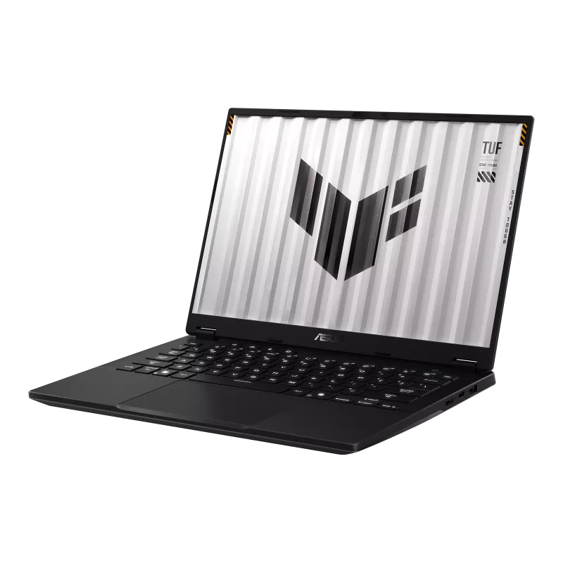
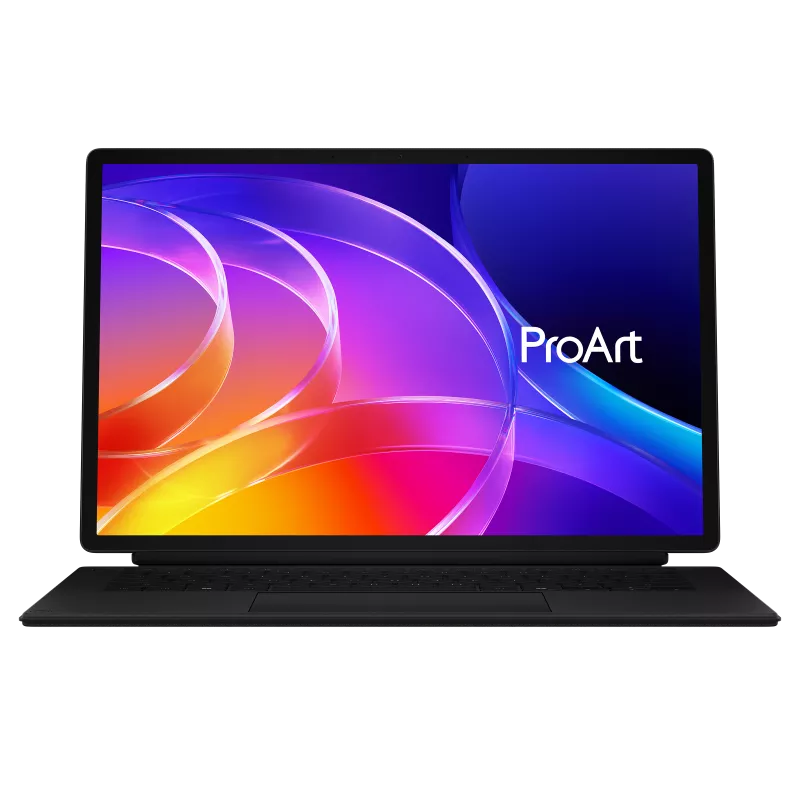
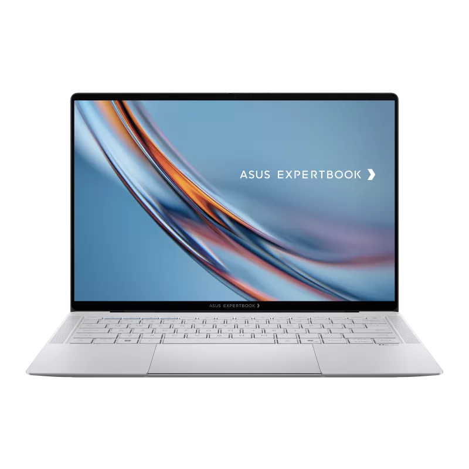

Istória Marka
ASUS
In Search of Incredible
Vizaun Jeral
ASUS hahú hanesan kompania hardware no motherboard iha Taiwan iha tinan 1989. Husi tempu ne'ebá to'o agora, ASUS muda boot — husi motherboard simples to'o laptop gaming high-end, ultrabook premium, no laptop AI moderno. Iha komunidade online, utilizadór barak gosta ASUS tanba performance no design moderno, liuliu linha ROG no ZenBook. ASUS agora konhesidu ba produtu iha kategoria gaming, kriatividade, estudante, no negósiu.
Liña Tempu
ASUS harii iha Taiwan
ASUS funda hanesan kompania hardware no motherboard iha Taiwan. Hahú ho ekipa ki'ik, ASUS fabriku motherboard ho kualidade aas ba merkadu internasionál.
Notebook dahuluk — ASUS P6300
ASUS lança notebook dahuluk, ASUS P6300. Pasu boot ida ba kompania ne'ebé uluk deit halo motherboard, agora hahú entra iha merkadu laptop.

Notebook multimédia ho TV tuner
ASUS cria notebook multimédia ho TV tuner embutido — inovasaun ne'ebé hanesan laptop bele hanesan televisaun iha tempu ne'ebá.
Parceria Lamborghini — Design Premium
ASUS halo parceria ho Lamborghini ba laptop design premium. Kolaborasaun rara ne'e hatudu katak ASUS hakarak kompete iha segmentu luxury computing.
Republic of Gamers (ROG) hahú
Linha gaming Republic of Gamers (ROG) hahú forte ba gamer sira. ROG sai marka gaming laptop no perifériku ne'ebé respeita iha mundu tomak.
Eee PC — Netbook ba Estudante
ASUS Eee PC populariza netbook ki'ik no barato ba estudante sira iha mundu tomak. Presu asequível no tamanhu ki'ik halo laptop sai asequível ba ema barak liu.

"In Search of Incredible" — Slogan foun
ASUS hahú slogan ikonik "In Search of Incredible" — promesa ba inovasaun ne'ebé kontinua guia kompania to'o agora iha tinan 2025.
ZenBook — Ultrabook Premium
Série ZenBook sai fino, leve, no premium. Ho design inspiradu ba seni Zen Japonés, ZenBook kompete diretu ho MacBook Air no Dell XPS iha segmentu ultrabook.

ROG Zephyrus — Gaming Laptop Fino
ROG Zephyrus torna gaming laptop fino no poderoso. Provida katak laptop gaming la presiza boot no todan tan — revolusaun iha industria gaming laptop.

AI, OLED Dual-Screen, no RTX 5090
ASUS integra AI, OLED dual-screen, RTX 5090, no teknolojia avansadu iha laptop moderno. ZenBook DUO liuliu hatudu futuru laptop ho ekrã rua OLED no tecladu soltu.
Mudansa Design
- Plastik boot no todan
- HDD lento
- Tela normal LCD
- Bateria la dura kleur
- Uso básiku escritório/eskola
- OLED no 240Hz display
- SSD NVMe ultra rápidu
- RGB gaming keyboard
- AI processor (NPU)
- Dual-screen laptop
- Cooling avansadu
- Design fino no premium
Linha importante

VivoBook
Laptop ba estudante no uzu loron-loron. Presu asequível, performance di'ak, leve.

ZenBook
Premium ultrabook — fino, leve, no elegante. Ba profisionál no utilizadór demanding sira.

ZenBook DUO
Laptop dual-screen OLED — forma foun ba produktividade ho ekrã rua klean.

TUF Gaming
Gaming laptop barato no resistente. Performance di'ak, durabilidade militar-grau.

ProArt
Ba kriador profisionál — display OLED kalibradu, akurásia kór Pantone-validated.

ExpertBook
Laptop ba negósiu no empresa. Seguransa aas, bateria naruk, design profisionál.
Foku Atual
Ohin loron, ASUS kontinua investe iha teknolojia AI liuhosi plataforma Copilot+, ekrã OLED dual-screen, no chip gerasaun foun ho NPU dedikadu. Linha ZenBook, ExpertBook, VivoBook, no ProArt hetan benefísiu husi inovasaun sira ne'e. ASUS hanesan ida husi sinku vendedor PC boot liu iha mundu, ho reputasaun forte iha segmentu gaming (ROG, TUF) no kriatividade (ProArt).